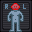

Beginners Guide
The Beginners Guide is a set of tutorials meant for people entirely unfamiliar with Space Station 13 as a game. This guide will cover the most basic concepts of the game to get you started using the BYOND engine and the game's interface. It's recommended to keep this guide open in another window as you learn.
A wise man once said, "If you can figure out the interface, you can figure out anything."
What even is Shiptest?
Space Station 13 is a multiplayer roleplaying sandbox developed using the BYOND engine. It involves being part of the crew in a space station, and usually has a variety of gamemodes that the game picks from to create interesting challenges to the crew, ranging from rival traitors, changelings, ninjas, operatives tasked with the destruction of the station, and so on.
As opposed to typical Space Station 13 which takes place on an immobile station, players of Shiptest take the role of astronauts on various space ships, all flying through space. There are many different jobs, ships and roles available, and each player chooses and plays a role on their ship of choice. These ships cover a wide variety of specializations and unique gimmicks to keep every round different. Shiptest is a roleplay server, and does not feature traditional antagonists.
Rules
Yes, there are rules here, to ensure a positive experience for new players such as you. Please take a moment and read them (they aren't that long).
Joining the Server
To join the server, there are a couple steps involved:
- Download the BYOND client from here. You'll need it to start playing.
- Register for a BYOND account here. Make sure you check that you're over 13.
- Open BYOND, log in with your account, click the cogwheel on the top right and choose "Open Location"
- Add this server to your bookmarks, or just join manually by copying & pasting: byond://join.shiptest.net:41372
When you first join the server, the menu might not appear or you will not be able to click anything for a few seconds up to a minute or two due to BYOND downloading resources. You will know when it's completed by seeing the menu and the background splash image.
Other than that, you should be in! Before you can start playing though, you need to create a character first.
Create your Character
Character Setup
Here's where you'll set up your character's characteristics, name, and other miscellaneous attributes, such as their handicaps or abilities in the quirks setup.
- Make sure the character you create is reasonable as per the IC rules dictated on the rules page. Shiptest is built to allow wide range in what can and can't be done with characters, but there are still some limits that should be followed.
- You can write a flavor text of varying length that people can read when they examine you if your face is visible. This can also be used for OOC notes, like anything you'd want other players to know about you as a player that might have some impact in-round. For reference, flavor text should not directly tell the other players how to feel about your character.
- Preview Job Gear allows you to check out how your character will look with the default equipment of a role.
- Special Names, excluding Cyborg, AI, and Chaplain names, do nothing most of the time and can be safely ignored.
- You can choose between a backpack, a satchel, a messenger bag, and a duffel bag. All of the backpack options are functionally identical to each other, except duffel bags, which can carry a lot more than any of the other backpack options, but slow your movement down.
Character Appearance
This menu lets you set the appearance, species, and underclothing of your character. The various species have varying levels of gameplay differences to them, and some basic lore, most of which should be noted in the menu you select your species from. Most of the major ones have their own wiki pages that go into more detail, but don't feel worried about winging it. Species namegen shouldn't be followed too rigidly, either, as long as what you pick is reasonable. Make sure your name is not lowercase.
Gear
Gear allows your character to start with specific things, like clothing, plushies, hats, jackets, and whatnot. They all spawn in a box in your backpack when you join a ship. Each item takes one point, and you have 10 points to spend. It is highly encouraged that you spend your first few points into a radio, a flashlight, and an emergency crowbar.
Game/OOC Preferences
These are the various settings that you can change later on in game, such as whether or not listen to admin-triggered MIDIs or hear the lobby music. You can enable "Runechat" by changing the chat on map for mobs/objects settings. This will display certain messages over mobs and objects instead of just in the chat window on the right.
On the right are the special role settings. Most of these don't currently do anything on Shiptest and can be more or less safely ignored. You might want to enable Xenomorph, pAI, and Sentience Potion Spawn, since these options only dictate if you are given an in-game offer to play these roles when they are available, and you can still hit "No" on that when it does show up.
Remember to click the Save Setup button to save your settings!
Help It's Asking Me Which Ship And Job To Join Onto Now
Once you hit "Join Game", you will be asked to select a ship to join (or the option to spawn your own ship), and then a job to play on that ship. The first recommended step to do is to instead hit "Observe" and teleport to the ship you want to join. You can always respawn after observing. Don't stress out too much about the choice - ships are usually forgiving to newcomers, and often offer an assistant role. If you are curious as to what a ship does, you can ask in OOC or look at the wiki page.
The job you pick mostly affects what gear you spawn with and what loose role you'll be expected to take on the ship. Crews on Shiptests are generally small enough that everyone will end up doing a little bit of anything, and what jobs are available differ based on the class of ship chosen. If you're confused, it's probably best to just pick Assistant, or its equivalents.
I Have Now Joined The Game And Have No Idea How To Play
In short: You keep your ship running, and you do your job. This may be harder than it sounds. Each ship is, more often than not, specialized in a certain aspect and thus may become the focus of your shift.
It's easier to know how to ask for help than it is to know everything about this game.
- Local OOC is an out-of-character communication channel that only shows to those in view range of you. It shows the name of your character and is useful for things that would break character if you said them ICly, but that you don't want broadcast to literally everybody on the server. Most likely you're going to use this for asking people how to do things if there's no way to convey without saying "you need to click this/press this button/this is bugged right now and doesn't actually work", or asking things that your character would know, but you don't. By default, LOOC is bound to L in hotkey mode, and works like
looc wagooguswhen typed into the bottom verb bar manually ("wagoogus" being placeholder for anything you'd be actually saying). - You can ask in regular global OOC if the question you're asking wouldn't give too much information about in-round occurences. OOC is bound to O by default and looks like
ooc wagoogusin the verb bar. - Mentorhelps are specifically designed for asking for in-game help. Sending one sends the message to a mentor chat, who are often experienced players. Don't worry too hard about revealing round information in this, mentors might be in-game when they see the message, but are trusted to not do anything with the knowledge. Mentorhelps can be sent by clicking "mentorhelp" in the mentor tab or
Mentorhelp wagoogusin the verb bar. - More often than not, the ship you have chosen will not be equipped to deal with everything. For example, an entertainment ship would be great at handing out drinks, but might not have the greatest of medical facilities. You can call other ships over wideband, through holopads, or through fax machines to come and assist you.
- Many ships do not have telecommunications, which makes headsets useless. Bring, or find a handheld radio. You can spawn with one on the gear tab. To talk through them, you can alt+click them, or you can use :l or :r, depending on the hand you're holding them with, to whisper into them.
The Game
Right-side Interface
When you join in, you should take a look at the right side of the game window. You'll see some tabs labelled Status, Admin, IC, Mentor, OOC, Object, and Preferences. The most important tabs is the Status tab. If you're using internals (an air tank and mask), the Status tab tells you the remaining air pressure left inside the tank you are breathing from - quite useful for avoiding death by suffocation.
The top right of the screen contains the action tabs mentioned previously, and the bottom right is the text log. This is where you can see everything what people are saying, what's happening around you, and chat such as OOC or adminhelps. The bar along the bottom of the screen is the input bar, but since you should be on Hotkey mode (the Tab key) you won't need to use it too much.
Left-side Interface
It's a well known fact that the biggest plebe gate to entry in Space Station 13 is the controls. The UI is, at a glance, complex, and the controls are not intuitive. Thankfully, once it clicks, you'll never have an issue with it again. Your brain will hurt the first few times you try to play this game, all of ours did - after two or three rounds of practice, you should be able to concentrate and play the game.
Hands

One of the most important controls in the game. You have the ability to hold an item in each hand (unless an item takes up both hands). The square around one of the hands is the selected hand. If you have an empty selected hand, and click on an object, you'll pick it up/open it/use it. If an object is in your selected hand and you click on something, you'll use it on the item you're holding. (The way this works means that if you'd like to unequip your backpack, you need to click and drag the bag into your hand - if it was removed by clicking on it, you'd never be able to open the bag.)
If this seems confusing, this will be explained in further detail later in the guide.
Inventory
These icons manage your inventory.
The backpack icon can be toggled to show your worn equipment in an expanding pop-up menu.
The belt , backpack , and pocket icons are all storage locations.
The ID slot can hold your ID or your PDA (which can hold your ID inside).
Interaction
These buttons directly affect how you interact with objects.
The drop and throw icons do exactly what they say. Dropping is self explanatory, but the throw button is a toggle - if it's on and you click somewhere, you'll throw the item in your hand at where you clicked and throwing will be automatically disabled until you reactivate it. (You can also press R to enable throwing and Q to drop your held item.)
The pull icon only appears when dragging something, and can be pressed to stop dragging an object. Hotkey: "del".
The internals icon can be clicked to enable/disable your internals (oxygen tank and breath mask).
The resist icon can be pressed to break out of grabs, restraints, and if you're on fire, is the "stop drop and roll" button. Hotkey: "B".
The run/walk toggle icon can be pressed to switch between running and walking. Running is faster, but walking has benefits, such as being able to walk over wet floors without slipping - useful for when the janitor doesn't put wet floor signs down. Hotkey: Hold "alt" to walk.
The body selector  icon is used to choose which body part you want to target. This is used for both targeting specific sections to heal, or targeting specific sections when attacking someone. Click a limb to target it. (You can target individual arms, legs, the head, the upper torso, the groin, the eyes, or the mouth.) Hotkeys: "numpad keys".
Last but not least is the intent selector - this will be explained in detail later. It has four modes: Help, Disarm, Grab, and Harm, in clockwise order. Hotkeys: "1-4".
Other
The health icon and doll change depending on how injured you are.
The crafting menu icon opens the crafting menu.
The speech bubble  icon opens the languages menu. You won't need to use this for the tutorial.
icon opens the languages menu. You won't need to use this for the tutorial.
The create area icon is used to create an "area", which is a more advanced topic. You won't need to worry about it for this tutorial.
Alerts
These will only appear on the HUD if something is wrong.
Oxygen warning - The air you're breathing doesn't have enough oxygen. Put on some sort of breathing mask and hold or wear a gas tank to breathe the gas from that before you start taking damage.
Pressure warning - Pressure levels are too high (red) or too low (black). Low and high pressures can kill you, put on a space suit of some description to protect yourself.
 Toxin warning - You are breathing in toxic gases. Do the same procedure as the low oxygen warning.
Toxin warning - You are breathing in toxic gases. Do the same procedure as the low oxygen warning.
Fire warning - You are on fire. Clicking this will also cause you to stop drop and roll to attempt to put this out, and may take a few tries.
Freeze warning - The air is cold enough to freeze you.
Temperature warning - You're too cold or too hot. Get somewhere warmer or change clothes, because you'll slowly take damage depending on how extreme the temperature is. It also may affect your move speed.
Hunger warning - You're starting to get hungry. You can't actually die from hunger, but the longer you go without food, the slower you will be able to move, as currently it only affects mood.